Web Project Plan
Brief
-
Finalità e obiettivi informativi
Il sito è dedicato a Sara Grimké, una delle più importanti protagoniste del movimento abolizionista americano del XIX secolo. L'obiettivo che si pone questo progetto è di valorizzare le idee femministe e rivoluzionarie di Sara Grimké, che si batté sempre per il miglioramento della condizione della donna e in molti suoi scritti affermò l’uguaglianza tra i sessi. Le sue idee sulla questione di genere emergono con particolare chiarezza nelle ‘Letters on the Equality of the Sexes and the Condition if Woman’, che questo sito cataloga e ordina per permetterne una facile fruizione.
Si tratta pertanto di un sito informativo ed educativo, che si iscrive nell’ambito disciplinare della storia del pensiero politico delle donne.
-
Utenza
Questo sito è stato creato con l’intento di diventare uno strumento didattico per studenti di vari ordini di istruzione.
Può infatti essere consultato da uno studente universitario per informarsi sul personaggio di Sarah Grimké e avere facile accesso alle sue opere, oltre che la possibilità di scaricarle.
Inoltre, il sito contiene una serie di risorse dedicate alla didattica per la scuola secondaria di secondo grado. Il sito infatti offre la possibilità di registrarsi come docente o come studente. Un questo modo gli studenti possono svolgere le attività didattiche e salvare ciò che hanno scritto e inviare le proprie risposte all’insegnante, mentre gli insegnanti possono visualizzare e correggere le risposte dei propri studenti, disporre della correzione degli esercizi e di un catalogo di materiali per la didattica (idee per dei laboratori, simulazioni della traccia C per la maturità ecc.)
-
Accesso alla risorsa
La risorsa è pensata in primo luogo per la fruizione da computer (fisso e mobile), ma il layout è stato progettato per adattarsi anche ad accesso da tablet o smartphone. Soprattutto per usufruire del catalogo delle lettere o per eseguire il download delle opere, il dispositivo scelto non influisce in alcun modo sulla user experience.
-
Contenuti
-
Nel prototipo
Il prototipo contiene materiali di diversa natura. Essendo un sito di natura didattica, la maggior parte dei contenuti è costituita da testi, sia contenuti nella pagina html che scaricabili dall’utente come pdf.
Per agevolare l’apprendimento, sono però stati messi a disposizione dello studente dei materiali multimediali e interattivi. Oltre ad una pagina dedicata ai video sull’argomento e ai link ad altre risorse utili, lo studente ha infatti la possibilità di completare una serie di attività didattiche che agevolino e coadiuvino la comprensione del testo.
-
Sviluppi futuri
Questo progetto potrebbe essere portato avanti compilando le pagine html per ogni lettera, seguendo il modello della prima. Inoltre si potrebbe arricchire il sito sottoponendo ad un’analisi altrettanto accurata anche le opere abolizioniste di Sarah Grimké.
Benchmark
-
Idea
Finora non è mai stato creato un sito interamente dedicato a Sara Grimké, anche se si possono trovare varie risorse interessanti legate al suo personaggio. Su cataloghi generalisti è possibile trovare la versione integrale delle sue opere, visto che non sono più coperte da copyright né in America, né in Italia.
Inoltre, essendo una figura particolarmente importante per la storia americana, la maggior parte delle risorse e degli articoli sono in inglese, pertanto creare un sito in italiano potrebbe fornire un accesso più diretto ai testi e alle informazioni relative all’autrice.
-
Contenuti esistenti
-
HathiTrust
Si tratta di una biblioteca digitale senza scopo di lucro, che collabora dal 2008 con biblioteche e università di tutto il mondo, per conservare più di 18 milioni di libri digitalizzati. Cerca di fornire agli utenti l’accesso più completo possibile ai materiali conservati, continuando a rispettare le leggi sul copyright degli Stati Uniti e degli altri paesi.
Molti dei pdf presenti sul Progetto Sarah Grimké sono stati stati scaricati da questa piattaforma.
Inoltre, tra i siti generalisti consultanti, HathiTrust è stato quello con il sistema di navigazione più chiaro e intuitivo.
Gli elementi più utili del sistema di ricerca sono stati:
- L’evidenza della barra di navigazione primaria nella pagina home
- La chiarezza dei filtri della sezione di navigazione secondaria e la possibilità di vedere i filtri selezionati e rimuoverli con facilità
- La chiarezza della descrizione degli item e della navigazione contestuale. Il sito infatti evidenzia i link, sfruttando al massimo il carattere ipertestuale delle raccolte di items digitali.
-
Internet Archive
Internet Archive è un sito generalista che è nato con lo scopo di fornire libero a tutta la conoscenza. Contiene ogni tipo di contenuto multimediale, dal pdf al sito, dall’immagine al programma televisivo.
Nonostante sia uno strumento molto utile, su cui sono stati trovati contenuti audio e pdf interessanti per il Progetto Sarah Grimké, il sistema di ricerca è poco intuitivo e confusionario, al punto tale che risultano necessari diversi tentativi prima di capire come ottenere items pertinenti a ciò che si sta cercando.
Gli aspetti più interessanti del sito si trovano a livello item:
- La possibilità di salvare tra i preferiti l’item se si ha un account
- La quantità straordinaria di opzioni per il download e per la condivisione
-
CarducciOnline
Si tratta di un sito ufficiale dell’Unibo dedicato alla figura di Giosuè Carducci. Siccome il Progetto Sarah Grimké punta ad essere uno strumento didattico adatto anche alla consultazione universitaria, nella sua creazione si è preso spunto da questa risorsa per alcuni elementi strutturali e di layout.
In particolare:
- Per la scelta delle categorie da inserire nella barra di navigazione primaria
- Per l’adattamento del layout da computer a smartphone
- Nella barra di navigazione primaria si ha possibilità sia di selezionare la categoria presente sulla barra, sia una delle opzioni del menù a tendina, che compare quando si passa sopra alla categoria principale.
-
ManzoniOnline
Il sito ManzoniOnline è il risultato di un altro progetto portato avanti in ambito universitario. Siccome contiene una sezione dedicata alle lettere di Manzoni, è stato particolarmente utile per progettare il catalogo e il sistema di navigazione per le Lettere sull’uguaglianza dei sessi, che costituiscono il nucleo concettuale del pensiero femminista di Sarah Grimké e pertanto sono centrali per questo progetto.
Struttura
-
Mappa concettuale
La creazione di una mappa concettuale è stato il primo passo per visualizzare gli argomenti di questo progetto e per chiarirne i nuclei tematici. Un argomento centrale è sicuramente la biografia di Sarah Grimké, rivista alla luce del suo attivismo. È infatti fondamentale comprendere gli elementi della sua formazione che l’hanno portata a sviluppare idee tanto moderne e anticonvenzionali per la sua epoca.
In secondo luogo si sono evidenziati i due temi cardine del suo pensiero riformista (attorno cui ruota tutto il suo impegno politico): la parità di genere e l’abolizione della schiavitù. I due argomenti sono trattati come separati perché Sarah Grimké scrive in un mondo precedente alla formulazione della teoria dell’intersezionalità e, nonostante sia sensibile alla condizione della donna nera, quando parla di donne dà l'impressione di riferirsi principalmente alle donne bianche.
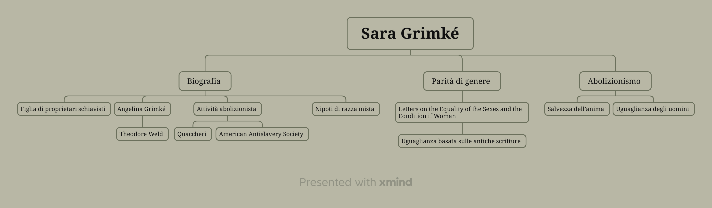
-
Modellazione concettuale
Per descrivere gli elementi cardine di questo progetto Web si è ritenuto opportuno utilizzare la modellazione concettuale. Infatti le classi di elementi sono state raggruppate in base alle loro caratteristiche comuni, utilizzando il concetto di entità (rappresentata come un rettangolo). In seguito si sono evidenziate le relazioni tra tali entità, rappresentandole come rombi. Infine sono stati riportati gli attributi che caratterizzano sia entità che relazioni, iscritti all’interno di ellissi.
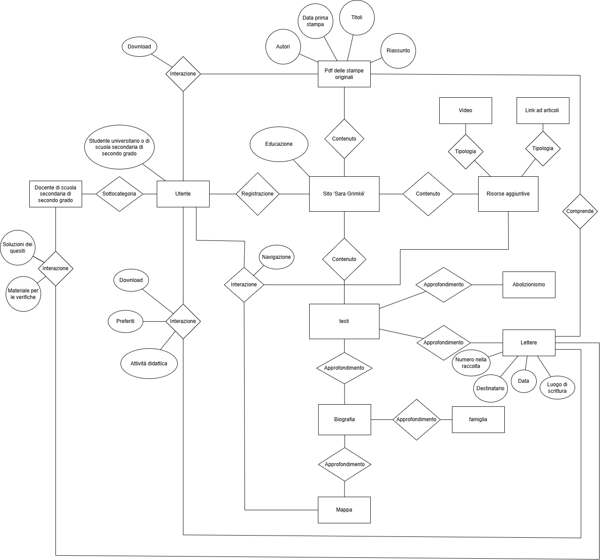
-
Schema delle dipendenze
Dalla pagina home, che costituisce la pagina di livello più alto del sito, è possibile accedere, attraverso la barra di navigazione, alle pagine di secondo livello, che sono:
Il Catalogo delle lettere rappresenta l’aspetto più importante del progetto. infatti raccoglie gli item, ciò le lettere, su cui si fonda l’attività didattica proposta dal sito: ogni item è infatti composto a sua volta da tre pagine html, contenenti in ordine il testo originale della lettere, la traduzione e infine una serie di esercizi didattici. Le tre pagine di cui si compone ogni item sono interconnesse tra di loro attraverso un sistema di pagination, da un indice all’inizio di ogni pagina che permette la navigazione contestuale e da una serie di link, volti a facilitare lo svolgimento degli esercizi. Inoltre, tutte e tre le pagine dell’item presentano un bottone per tornare al menù.
In tutte le pagine del sito sono presenti molteplici link, per agevolare la user experience, cercando di prevedere le necessità dell’utente. Nonostante lo schema delle dipendenze sia stato pensato avendo in mente una struttura ad albero, l'obiettivo del progetto è di sfruttare a pieno le possibilità che offre un ipertesto.
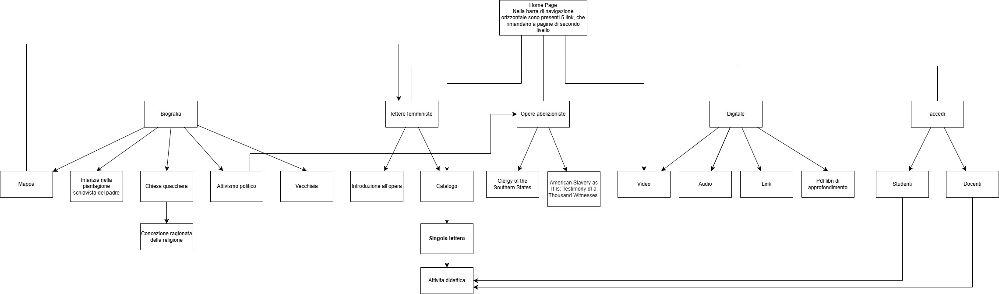
-
Categorie descrittive
Nel sito sono state usate diverse categorie descrittive in base alla tipologia di item da catalogare: per i libri sono state usate le categorie riportate al punto 3.4.1, mentre per le lettere quelle indicate al punto
-
Sistema di catalogazione usato per: Letters on the Equality of the Sexes and the Condition of Woman, An Epistle to the Clergy of the Southern States, American Slavery as It Is: Testimony of a Thousand Witnesses
- Title (DC): titolo dell’opera
- Creator (DC): autore
- Subject (DC): argomenti trattati
- Description (DC): descrizione dell’opera
- Contributor (DC): destinatario dell’opera (se è presente)
- Date (DC): data di pubblicazione
- Type (DC): tipo di risorsa
- Format (DC): formato della risorsa
- Language (DC): lingua del testo originale
- Coverage (DC): Luogo di cui l’opera tratta
- Right (DC): informazioni sul copyright
- Contributor (DC): ente che ha digitalizzato la risorsa
-
Sistema di catalogazione usato per le singole lettere nel Catalogo
- Title (DC): Titolo della lettera all’interno della raccolta
- Identificator (DC): numero della lettera nella raccolta
- Contributor (DC): destinatario della lettera
- Date (DC): Data della lettera
- Coverage (DC): Luogo in cui è stata scritta (se presente)
- Description (DC): Descrizione del contenuto della lettera
- Subject (DC): temi principali affrontati dalla lettera
- Source (DC): Archivio di provenienza )
- Right (DC): informazioni sul copyright
- Contributor (DC): ente che ha digitalizzato la risorsa
Layout
Tutte pagine del sito hanno come sfondo una lettera scritta di pugno da Sara Grimké. All’inizio di ogni pagina troviamo il titolo, anch’esso tratto dalle lettere da lei scritte. Subito sotto, è presente la barra di ricerca, che costituisce il canale di navigazione primario. Gli elementi della navbar sono dei dropdown: cliccandoci sopra si possono visualizzare le opzioni che costituiscono il canale di navigazione secondario.
La sezione centrale, che contiene il contenuto specifico di ogni pagina, è caratterizzata da uno sfondo bianco, in modo da facilitarne la lettura. All'inizio di ogni pagina, tranne che nella home, sono presenti i breadcrumbs per permettere all’utente di comprendere facilmente la propria posizione nella pagina.
Un altro aspetto dell’interfaccia coerente in tutte le pagine è il footer: contiene il link alle pagine social del progetto e le informazioni relative al progetto, oltre che il link che apre la pagina del Web project plan.
E’ inoltre importante premettere che il layout qui descritto è quello legato alla visualizzazione da computer: l’interfaccia è pensata per adattarsi anche alla visualizzazione da dispositivo mobile, ma la distribuzione delle componenti della pagina è leggermente diversa, siccome si è fatto largo uso del layout a griglia di bootstrap.
-
La home page
-
L'architettura di interfaccia
Il contenuto della home è diviso in quattro sezioni. La prima contiene una foto di Sarah Grimké affiancata da un breve testo che spiega le finalità del progetto.
La seconda racchiude la barra di ricerca per navigare liberamente all’interno del sito.
Nella terza troviamo il pensiero femminista di Grimké introdotto in poche parole, affiancato ad un carousel con delle foto riguardanti la raccolta Letters on the Equality of the Sexes and the Condition of Woman e dei bottoni che permettono di andare alla pagina dell’introduzione all’opera, oppure di aprire il catalogo con il filtro riguardante il destinatario già impostato (in modo da visualizzare solo le lettere inviata ad Angelina o quelle inviate a Mary S. Parker). In questa sezione troviamo anche un bottone che permette di aprire rapidamente la pagina del catalogo.
Infine l’ultima sezione include un breve paragrafo che parla dell’attivismo abolizionista di Sarah Grimké e introduce le sue opere. Il testo è affiancato da un carousel contenente le copertine delle opere abolizioniste di Grimké e dei bottoni che reindirizzano alle pagine di tali opere.
-
I wireframe
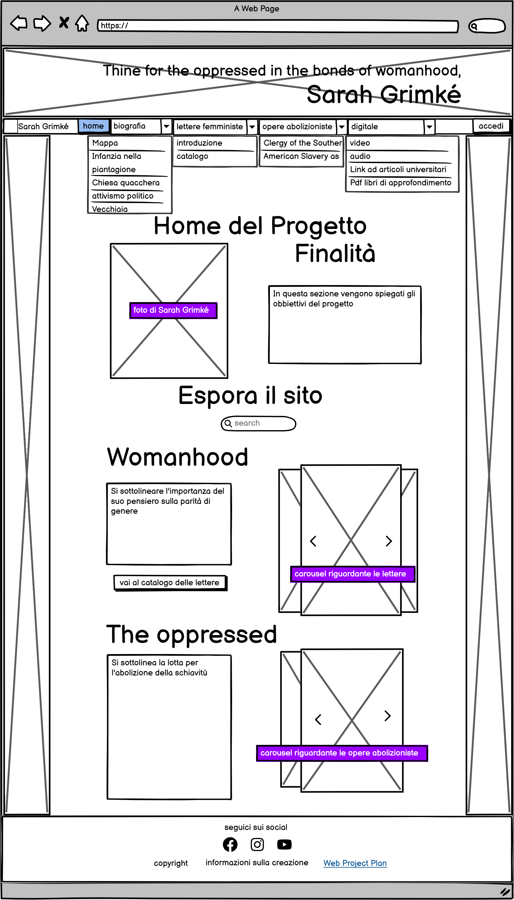
-
La biografia
-
L'architettura di interfaccia
La biografia è contenuta in un’unica pagina. I link presenti nel dropdown che compare quando si clicca su ‘biografia’ nella navbar sono pensati per condurre ad una sezione specifica della pagina della biografia, legata ad un determinato periodo della vita di Sarah Grimké.
La pagina è divisa in cinque sezioni: la mappa, l’infanzia nella piantagione, il periodo nella chiesa quacchera, l’attivismo politico e la vecchiaia. La sezione della mappa contiene una StoryMap creata usando Knightlab. Altre sezioni contengono invece del testo, reso più interattivo con dei link e delle evidenziazioni opportune e affiancato da delle immagini che aiutino con la contestualizzazione.
-
I wireframe
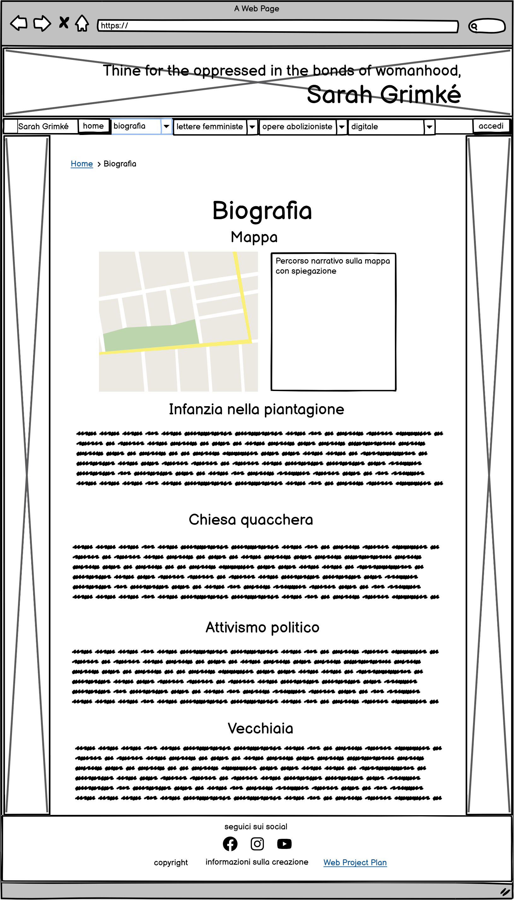
-
L’introduzione alle opere
-
L'architettura di interfaccia
Si è usata la stessa struttura di interfaccia per descrivere e introdurre tutte le opere di Sarah Grimké: Letters on the Equality of the Sexes and the Condition of Woman, An Epistle to the Clergy of the Southern States e American Slavery as It Is: Testimony of a Thousand Witnesses.
In questo caso la pagina è suddivisa in tre sezioni. La prima contiene l’immagine della copertina affiancata da una tabella che descrive l’opera attraverso le categorie Dublin Core adatte. Nella tabella sono anche presenti due bottoni che permettono di scaricare l’opera in diversi formati: epub e pdf.
La seconda sezione è dedicata all’analisi Voyant: in un breve paragrafo viene spiegata l’utilità di questo ambiente web. Il testo è seguito da un bottone che porta all’analisi Voyant e del manoscritto in questione ed è affiancato da una foto della rappresentazione grafica della ricorrenza dei termini fatta da Voyant.
Infine l’ultimo paragrafo contiene un breve testo che descrive i principali argomenti affrontati all’interno dell’opera. Tale testo è seguito da un bottone che porta al catalogo, se ci troviamo nella pagina dedicata alle Letters on the Equality of the Sexes and the Condition of Woman, oppure riporta alla pagina home.
-
I wireframe
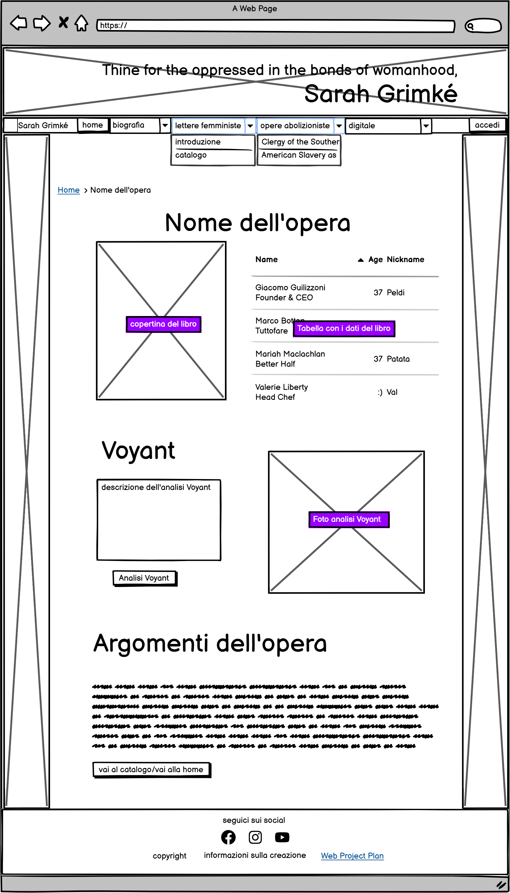
-
Il catalogo
-
L'architettura di interfaccia
Il catalogo è diviso in due pagine: la prima contiene i filtri e parte delle lettere, la seconda contiene le lettere rimanenti. I filtri sono inseriti all’interno di un accordion e seguono le categorie Dublin Core usate per catalogare le lettere. Le singole lettere sono rappresentate come card, composte dall’immagine della prima pagina di ogni lettera nella raccolta del 1838 e dalla descrizione dell’item, e sono disposte in file da tre.
Si può navigare facilmente tra le due pagine del catalogo sia grazie ai breadcrumbs all’inizio della nav centrale che alla pagination posta prima del footer.
-
I wireframe
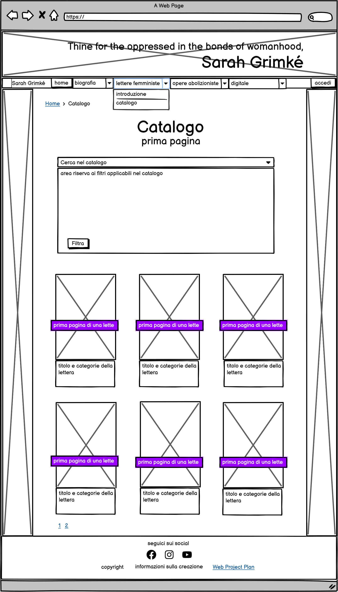
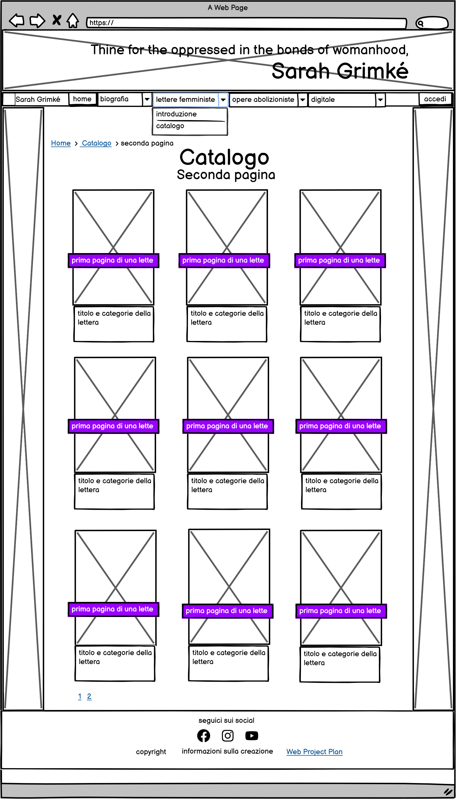
-
Gli item del catalogo
-
L'architettura di interfaccia
Ogni item della raccolta è diviso in tre pagine, con funzioni diverse.
La prima contiene due sezioni: una consiste in una foto della prima pagina del capitolo affiancata da una tabella che descrive in modo dettagliato la lettera attraverso le categorie del Dublin Core e un bottone che permette di tornare al catalogo, mentre la seconda contiene un accordion con all’interno una serie di bottoni che permettono di spostarsi tra le pagine dell’item e sulla destra il testo originale della lettera. Il testo è seguito da due bottoni: uno per tornare all’inizio della pagina e l’altro che riporta al catalogo.
La seconda pagina contiene il testo tradotto della lettera e ha una struttura molto simile alla prima. il testo è infatti affiancato da un accordion contenente gli stessi bottoni presenti nella prima pagina e alla fine del testo troviamo i bottoni per tornare all’inizio e per andare al catalogo.
Infine, la terza pagina è dedicata agli esercizi, affiancati anch’essi dall’accordion che permette la navigazione dell’item. Gli esercizi sono scritti ricalcando il modello della prova B della maturità e possono essere completati e consegnati all’interno del sito. In questa pagina si sfruttano a pieno le possibilità offerte dagli ipertesti, infatti quando si richiede di riflettere su un passo del brano, viene data la possibilità allo studente di tornare alla sezione del testo da cui il brano è tratto, sia nel testo originale che nella traduzione.
Le tre pagine sono pertanto strettamente interconnesse e l’impostazione stessa della pagina sollecita l’utente a spostarsi da una pagina all’altra. L’utente può infatti sfruttare: i breadcrumbs a inizio pagina, la pagination posta dopo il contenuto, i bottoni nelle accordions e i numerosi link interni che collegano le parti del testo.
-
I wireframe
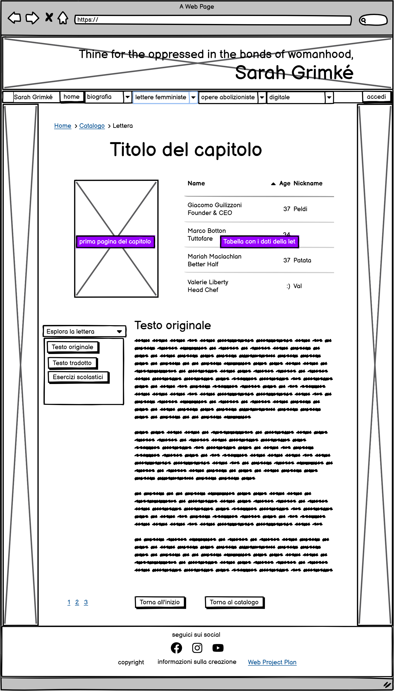
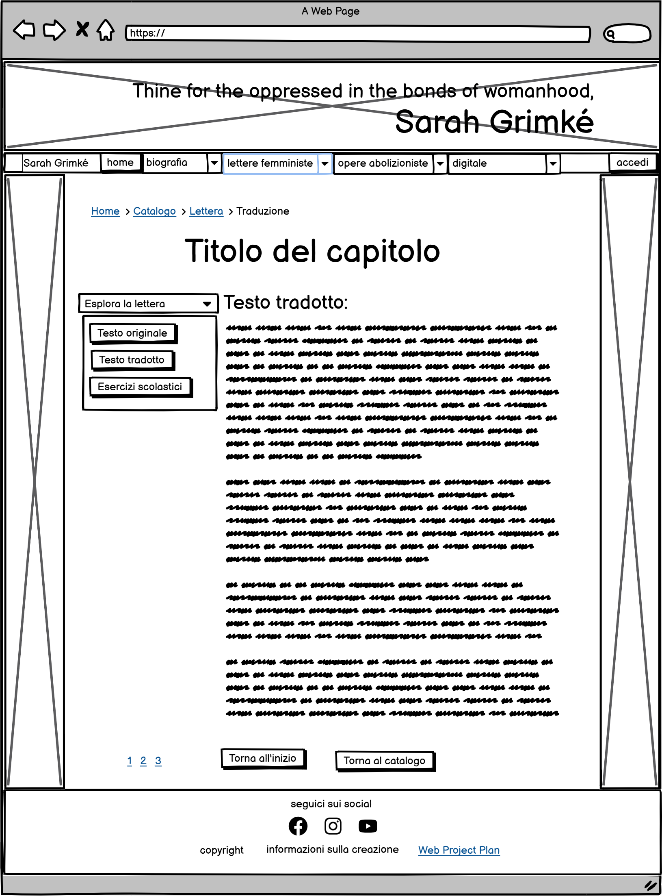
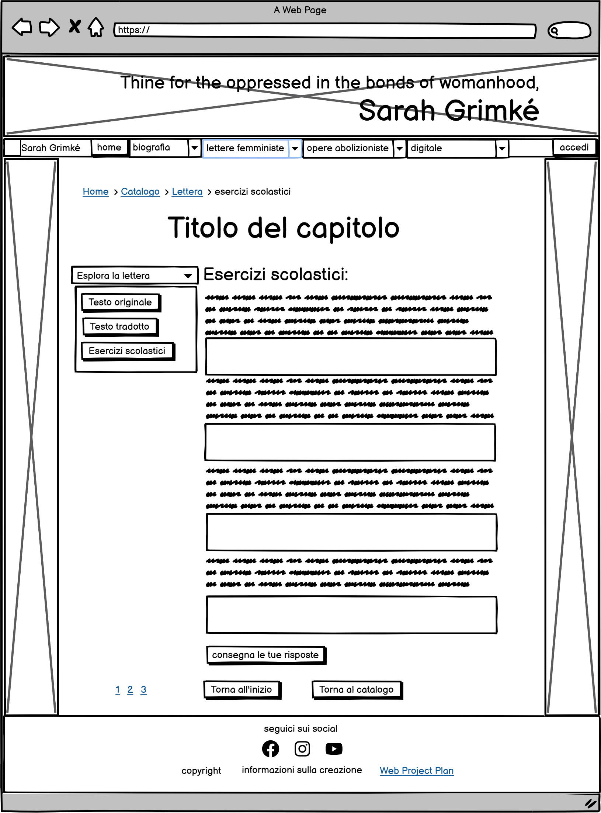
-
Digitale
-
L'architettura di interfaccia
La pagina del digitale racchiude una serie di risorse, soprattutto in inglese, che trattano dell’operato e delle opere di Sarah Grimké. La pagina è divisa in quattro sezioni: video, audio, articoli universitari e pdf di libri di approfondimento. Come nel caso della Biografia i link che compaiono nella navbar non rimandano a pagine diverse alle diverse sezioni della medesima pagina.
-
I wireframe
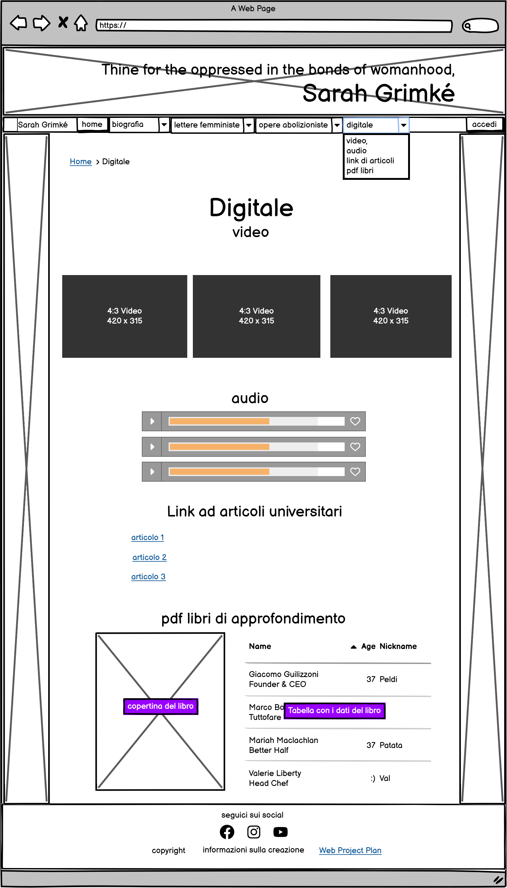
-
Accedi
-
L'architettura di interfaccia
Il sito permette un accesso differenziato agli studenti e agli insegnanti, pertanto si richiede l’accesso con la mail di istituto. dopo aver eseguito l’accesso gli studenti possono salvare i propri progressi e inviare gli esercizi completati all'insegnante. Il docente invece ha la possibilità di visualizzare e correggere le risposte e di accedere a contenuti aggiuntivi nella sezione Digitale.
-
I wireframe

Usabilità
-
Architettura di interfaccia
Nel creare l’interfaccia si è cercato di migliorare il più possibile l’esperienza dell’utente, soprattutto da computer.
Innanzitutto si è cercato di migliorare il sistema di navigazione primaria con i seguenti accorgimenti:
- La navbar è di tipo sticky, pertanto rimane sempre visibile all'estremità superiore dello schermo. In questo modo l’utente non deve tornare all’inizio della pagina per spostarsi nel sito.
- Sia cliccando sull’icona del sito e sul nome di Sarah Grimké che cliccando su ‘Home’ si torna alla pagina home. In questo modo l’utente può seguire diversi modi convenzionali per tornare alla pagina principale senza fare dei click inutili.
- Si è cercato di usare un labeling molto chiaro, che desse l’utente un’idea precisa del contenuto delle pagine elencate nella navigazione secondaria.
Un altro elemento che facilità notevolmente la navigazione è la presenza di breadcrumbs che permettono all’utente di capire dove si trova all’interno della struttura del sito e di tornare indietro con facilità.
Inoltre bisogna sottolineare la molteplicità di interconnessioni a livello item, che agevolano lo spostamento dell’utente.
Infine si deve notare che la divisione chiara della pagina in aree tematiche, attraverso un utilizzo oculato della titolazione, agevola per l’utente la fruizione del contenuto.
-
Layout
Alcuni aspetti del layout che migliorano l’usabilità sono:
- la ricorrenza della stessa struttura della pagina all’interno di tutto il sito: infatti l’header, il footer e lo sfondo sono gli stessi per tutte le pagine.
- Per mantenere un'estetica professionale e pulita si è deciso di utilizzare pochi colori all’interno del sito. Il colore ricorrente che risalta di più è una sfumatura scura di viola. Si è scelto il viola perché, nonostante sia associato tradizionalmente alla donna (come il rosa), trasmette una sensazione di calma e competenza dovuta al fatto che il viola stimola l’area del problem solving e della creatività nel cervello umano. L’altro colore utilizzato è un giallo sabbia che riprende la tonalità della carta ingiallita della lettera che costituisce lo sfondo, trasmettendo un senso di unità.
- Cambiamento del colore dei bottoni e dei link al passaggio del mouse. Si è utilizzata stessa sfumatura di rosa shocking in entrambi i casi, in modo che l’utente impari ad associare questo colore con la presenza di un collegamento ipertestuale.
-
Scrittura
Per quanto riguarda invece la scrittura si sono presi i seguenti accorgimenti:
- Si è scelto come font principale PT Serif: un font estremamente leggibile, ma che mantiene una grafica vagamente ottocentesca.
- La dimensione dei caratteri cambia a seconda dello schermo da cui si visualizza il sito: da dispositivo mobile è leggermente più piccola, ma lo spazio tra le lettere e l’interlinea aumentano. In questo modo chi utilizza il sito da telefono non deve scorrere all’infinito per arrivare alla fine della pagine, ma allo stesso tempo il sito mantiene un alto grado di leggibilità.
- Si è fatto largo uso del grassetto nei testi lunghi, in modo che l’utente potesse individuare facilmente i concetti importanti del testo e non si stancasse troppo durante la lettura.
- Poiché il contenuto delle lettere impone la presenza di testi lunghi, nella altre parti del sito si è cercato di essere sintetici e di dividere il contenuto in paragrafi
Servizi
Bibliografia
-
Per il web project plan e l'informatica umanistica
- Francesca Tomasi, Metodologie informatiche e discipline umanistiche, 2008
- Francesca Tomasi, slide del corso di Informatica Umanistica, a.a. 2024-2025
-
Per i contenuti
-
Per le mappe e i wireframe
-
Per layout e usabilità
-
Per il codice